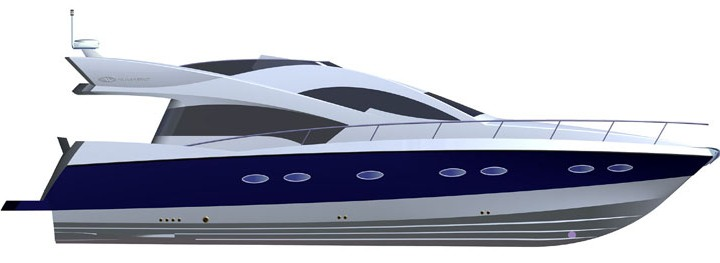

Not: Ýlk defa TurkCADCAM.net
Dergisi Ocak-Þubat 2006 Sayýsýnda yer almýþ bu yazý,
ek fotoðraflarla birlikte Aðustos 2008'de TurkCADCAM.net portalýndan yayýnlanmaya baþlamýþtýr.
Numarine, önemli oranda yerli katký ve kaynaklarla, yeni teknolojiler geliþtirip kullanarak Dünya çapýnda rekabetçi birçok model yat geliþtiriyor ve imal ediyor. Firma kurucusu ve sahibi Ömer Malaz da teknelere konusunda yakýndan ilgili ve tecrübeli bir yat kullanýcýsý... Firma Genel Md. Muzaffer Erdal Kýlýç, çocukluk yýllarýndan beri tekne yapýmýna gönül vermiþ ÝTÜ mezunu bir gemi mühendisi... Tam kapasitesine eriþtiðinde, tersane her yýl 15-30m boyutlarýnda 50 yat üretebilecek.
Tüm Numarine ekibi bir arada; Toplam 173 kiþinin çalýþtýðý
firmada toplam 12 mühendis/tasarýmcý bulunuyor.
Numarine, genel tanýtým videosu
Muzaffer
Erdal Kýlýç, Genel Md.
Can
Yalman, Endüstriyel Tasarýmcý
Ömer
Malaz, Firma kurucusu ve sahibi
CNC
imalat Md. Karl Heinz Mula çok iyi Türkçe biliyor.
Numarine, yeni bir yat konseptinin oluþmasý safhasýnda yat tasarýmý konusunda uzmanlaþmýþ Ýtalyan tasarýmcý Tommaso Spadolini'den danýþmanlýk alýnýyor (Design Studio Spadolini; www.spadolini.it). Teknenin hidrodinamik açýdan tasarýmý (stabilite, sürtünme...), kullanýlacak motor ve güç hesabý ise Ýtalyan gemi inþa mühendisi Umberto Tagliavini tarafýndan yapýlýyor. Tagliavini, yaptýðý tasarýmý iki boyutlu kesitler olarak firmaya veriyor.
- Numarine, teknenin 3D yüzey ve katý modellemesi ve detaylý endüstriyel ve estetik tasarýmý konusunda ise kurulduðu ilk günden bu yana Serbest tasarýmcý Can Yalman ile çalýþýyor. Yalman, tasarýmlarýnda Alias yazýlýmýný kullanýyor.
Ýmalatta çoðunlukla Cam elyaf (E glass) takviyeli kompozit malzeme kullanýlýyor. Tekne gövdesi, iki yüzünde elyaf-reçine kaplanmýþ yaklaþýk 2cm kalýnlýðýnda PCV köpükten inþa ediliyor. Numarine, DIAB Engineering (www.diabgroup.com) desteðiyle kurduðu vakum altýnda reçine (Vinylesther resin) emdirme (vacuum assisted infusion) sistemini sürekli geliþtirmektedir. Bu teknik sayesinde olabilecek en az reçine kullanýlarak saðlam ve hafif tekneler üretiliyor. Bu açýdan Numarine, Avrupa'daki birçok rakibinden çok daha önde bir teknolojiye sahip. Birçok firma hala üretimde elyafa fýrça ile manüel olarak reçine tatbik ediyor. Bu, mukavemetin daha düþük olmasýna sebep verdiði gibi aðýrlýðýn da gereksiz yere artmasýna sebep oluyor.
"DIAB Infusion Proses" uygulamasýna ait bir video
Kompozit yapýya ait FEA analizleri de Avustralya'daki DIAB Mühendislik bürosuna yaptýrýlýyor. Bu analizler sonucunda kritik bölgelerde kullanýlmasý gereken elyaflarýn cinsine (cam, Kevlar-Aramide, karbon elyafý) miktarýna ve elyaf yönüne karar veriliyor. Numarine, kompozit malzemelerin mukavemet analizleri konusunda servis verebilecek yerli mühendislik firmalarýnýn tekliflerine de açýk...
Takviye edilmesi gereken bölgelerde karbon ve Aramid (Kevlar) kullanýlýyor. Gövdedeki esnekliðin azaltýlmasý için gövdeye içeriden yapýþtýrýlmýþ profillerden oluþan bir takviye sistemi (grid stiffening system) bulunuyor.
Yeni geliþtirilen modeller:
102' RPH modeli, Numarine tarafýndan üretilen en büyük, güçlü ve lüks bir yat olacak. Yat tasarýmýnda müþteri istekleri doðrultusunda deðiþiklikler de yapýlabiliyor. 2006 yýlýnda ilk 102' RPH modelinin denize indirilmesi planlanýyor.
Salondaki 10 kiþilik yemek masasýna ek olarak, kokpit bölümünde 12 kiþilik bir yemek masasý daha bulunan mega yat; salonda ve flybridge'deki ek oturma birimleri sayesinde çok sayýda misafiri rahatça aðýrlayabilecek þekilde tasarlanmýþ. Kamara sayýsý opsiyonel olmakla birlikte; standart tasarýmda geniþ bir master kamara, her biri özel banyolu dört misafir kamarasý ve kýç tarafýnda tümüyle mürettebata ayrýlmýþ, üç kamaralý bir bölme bulunuyor. Salonda ve kamaralarýn her birinde klima, plazma ekran TV ve DVD player bulunuyor.
Tam Boy: 31,10 metre, En: 7,20 metre, Aðýrlýk: 90 ton
102' RPH Modeli'ne ait "rendering"ler: Bu yeni modelin imalatý 2006 sonunda bitmiþ olacak.

72' Fly modeli yatýn üretimi ise tamamlanmak üzere; 22,3m boyundaki bu tekne 1050hp gücünde bir MAN motorla 32-34 knot hýz yapabilecek.